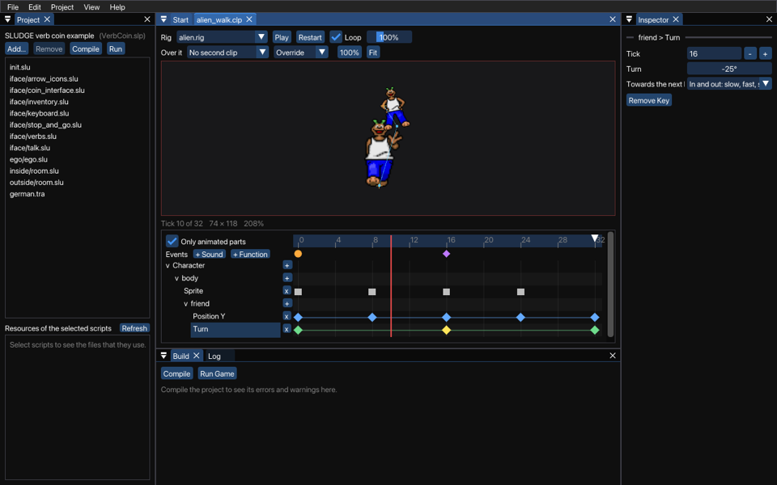

Use the Animation Editor to animate the parts of a Composite Character. What you make is an animation clip: for each part that moves, tracks of its place, turn, scale, sprite, visibility, depth or flip, with keys that set them at points in time, and events that play sounds or call functions. A character can play several clips at once, such as a walk and a blink (see Animation Clips). This is how it looks with the clip of a walk of the aliens of the Character Creator:

At the top is the character, as the clip poses it at the playhead: the red line on the timeline below. On the left of the timeline are the parts and their tracks, and on the right the keys of each track, as diamonds and squares. Time goes from left to right in ticks, the steps of the game. The Inspector shows the key or event that you select, or the clip.
Open a clip (a .clp file) with File > Open, or make a new one with File > New > Clip. Save it in the folder of your project, or in a folder inside it.
Choose the rig that the clip is made for in the Rig box of the toolbar: the rigs of your project. The editor shows that rig. The clip keeps only which rig it is for: it moves parts by their names, so it plays on any rig with parts of the same names.
The tracks are in the order of the rig's parts, each part under the part it is attached to. Click the name of a part to fold its tracks away, or to show them again. With Only animated parts on, the parts without tracks are hidden, except the parts that animated parts hang from.
The + by a part adds a track to it: Position (a track for X and one for Y), Turn, Scale, Sprite, Visible, Depth or Flip. The x by a track removes it, with its keys.
Tracks of parts that the rig doesn't have are at the end, in orange. They do nothing until the rig has a part of that name.
Put the playhead where you want a key, and move a part in the picture: drag it to move it, or drag the round or square knob on its ring to turn or scale it. That makes a key at the playhead, or changes the key that is there. If the part has no track for it yet, the editor makes one. A move keys the place only, a turn the turn, a scale the scale. The red frame of the picture, and the line under it, say what you are keying.
Moving parts in the picture always makes keys. To change how a character stands without an animation, use the Character Creator.
Click a key to select it, Shift-click to add keys to the selection, or drag a box around keys on an empty part of the timeline. Drag selected keys to move them in time, a whole tick at a time; hold Alt while you drag to copy them instead. A key keeps its value and its easing as it moves. A key that you move or copy onto a tick where its track has a key already takes that key's place; Undo brings the other key back. Delete removes the selected keys.
Click the name of a track to make it the current one, and press K to key it at the playhead, with the value that it has there.
The Inspector shows the selected key: its tick, its value and, for place, turn and scale, its easing. The easing says how the value goes from this key to the next one: Step holds it until the next key, Linear goes at a steady speed, and In and out starts and ends slowly. The colours of the keys show their easing, and so do the lines between them. Sprite, visibility, depth and flip keys always step.
Drop a sprite bank (a .duc file) on the window to key the selected part's sprite at the playhead, with sprite 0 of the bank. In the Inspector, choose the sprite's number in the bank, or another bank with Choose.... Nothing shows no sprite at all, an empty frame, and Own goes back to the sprite that the part has in its rig.
Events are in the lane at the top of the timeline. + Sound adds an event at the playhead that plays a sound file of your project; + Function one that calls a function of your scripts, which you name. Sounds show as orange circles, and functions as purple diamonds: point at one to see its sound or function. Drag an event to move it in time, and change it in the Inspector.
The white triangle at the end of the ruler is the end of the clip: drag it to make the clip longer or shorter, or type its length in the Inspector when nothing is selected. A clip can't keep keys or events past its end: when you shorten it past some, the editor asks first, and removes them only when you say so.
With Loop on, the clip goes round and round. Otherwise, it plays once and holds its last pose.
Play plays the clip, at the speed of your game; Restart plays it again from the start. The percentage next to Loop plays it faster or slower, without changing the clip. As the clip plays, its events flash as they pass. (The preview plays no sounds yet.)
Click or drag in the ruler to move the playhead, or use the Left and Right arrow keys: the picture shows the pose at that tick, and no events happen.
In a game, a character can play a clip on a layer over its costume (see playClip). To see how two clips go together, choose another clip of your project in Over it. Override lets the second clip set what it keys, over the first; Additive adds its places and turns to those of the first, and multiplies its scales.
When you rename a part in the Character Creator, its tracks in the clips made for the rig are renamed too. The editor opens those clips, so that you can save them with the rig. Undo in the rig undoes the rename in the clips as well.
Load the clip in your scripts with loadClip, and use it in a costume, with animate, or on a layer with playClip:
animate (ego, loadClip ('ego/wave.clp'));
playClip (ego, 2, loadClip ('ego/blink.clp'));
SLUDGE and this SLUDGE documentation are copyright Hungry Software and contributors 2000-2026